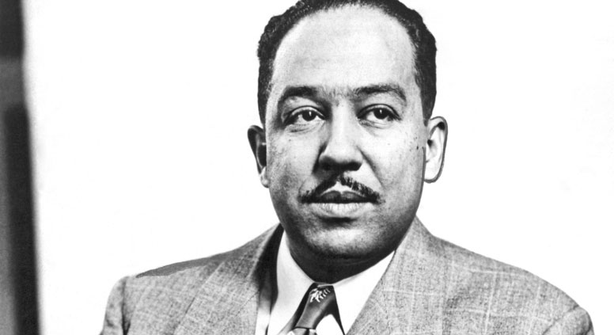

Langston Hughes was an influential poet and author in the 20th century. Because his works focused on the African American experience, he became a major contributer to the Harlem Rennaissance— a cultural eruption of African American art and literature in the 1920s. He attended Columbia University, traveled, and wrote his first poem when he was nineteen years old. His best known work is "Harlem," a poem about the frustrations of African Americans in the 20th century. The classic American play A Raisin in the Sun is based on this poem.
